Business Scenario: Home, Sweet Home Realty wants
to push sales orders directly from their own non-Oracle SaaS
platform into ABC Corporation's Oracle system — no manual
re-entry, no portal. ABC Corporation runs Oracle ERP, SCM, and CX.
Oracle Integration Cloud (OIC) is the tool built for exactly this
kind of scenario: a middleware bridge between two systems that
don't natively speak to each other. This chapter follows Harrison,
a rising-junior CS undergrad on his summer internship, as he
designs and builds that bridge — and the demo that proves it
works.
👥 Characters in This Chapter
Harrison — CS undergrad, rising junior,
summer intern at ABC Corporation, assigned the technical build
James (GREEN shirt) — ABC Corporation Sales Rep,
focused on winning the Home, Sweet Home business
Sarah — ABC Corporation Sales Manager, assigns
Harrison to the integration problem
Leila — Contact at Home, Sweet Home Realty,
the third-party SaaS customer pushing the orders
Scene 1 — The Problem Statement
Can a Third-Party Sales Order Be Accepted and Processed by Oracle?
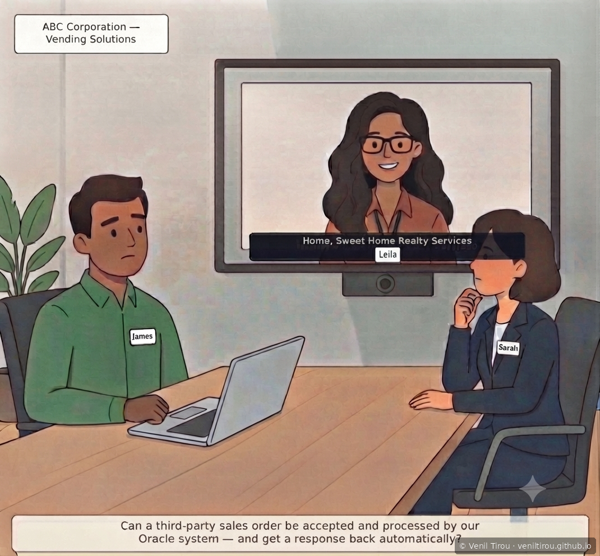
📱 On mobile? Pinch to zoom to read the details clearly.
What this shows: Leila, on a video call with
James and Sarah, explains that Home, Sweet Home's property
teams already place every vendor order through their own
SaaS procurement system — and she wants that system to push
orders straight into ABC's platform, automatically. Sarah
crystallizes the real question: can a third-party sales order
be accepted and processed by ABC's Oracle system, with a
response sent back automatically? Everything that follows in
this chapter exists to answer that one question.
Scene 2 — Harrison Gets the Assignment
A Technical Integration Problem, Not a Sales Problem
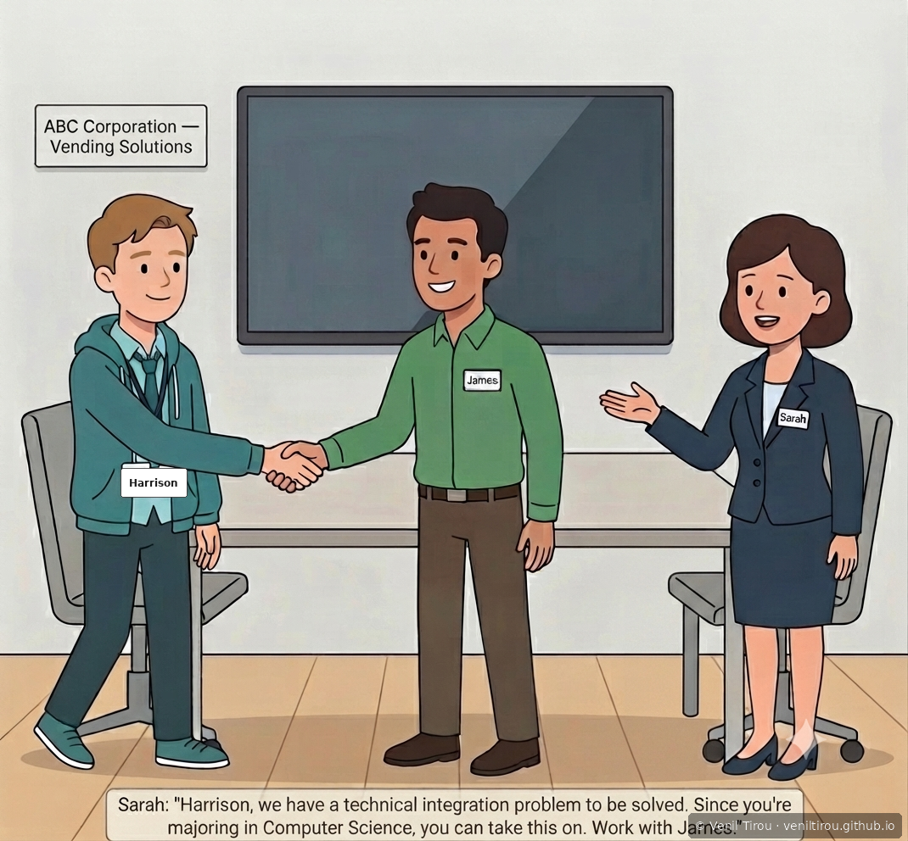
📱 On mobile? Pinch to zoom to read the details clearly.
What this shows: Sarah hands the problem to
Harrison directly: a technical integration challenge, suited
to his Computer Science background, to be tackled alongside
James. Home, Sweet Home's order system is not Oracle — for ABC
to receive orders from it automatically, something has to sit
in between, translating and routing data between two systems
that don't natively speak to each other. That "something in
between" is Oracle Integration Cloud (OIC).
Scene 3 — Harrison Explains the Approach
Introducing OIC as the Translator
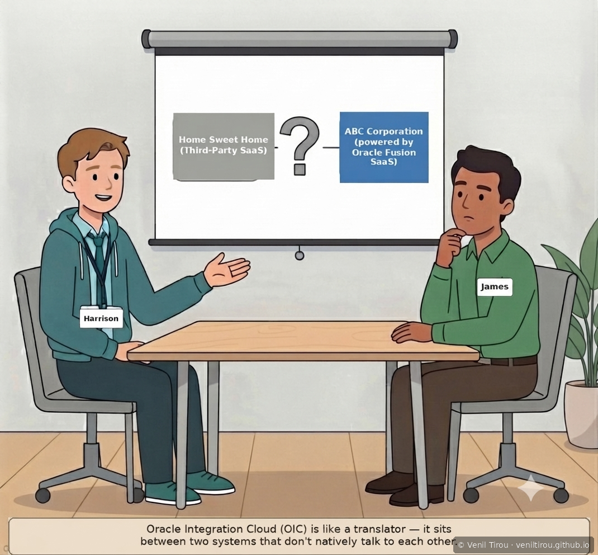
📱 On mobile? Pinch to zoom to read the details clearly.
What this shows: Harrison walks James through
the concept: Oracle Integration Cloud is a middleware platform
that doesn't replace either system — it sits between them,
receiving data from Home, Sweet Home's third-party SaaS
platform, reshaping it into what ABC's Oracle system expects,
and sending it through without either side needing to know the
other's internal format.
Scene 4 — OIC Workflow, Step 1: The Trigger and the Response Back
A Secured Door for the Order, and a Confirmation on the Way Out
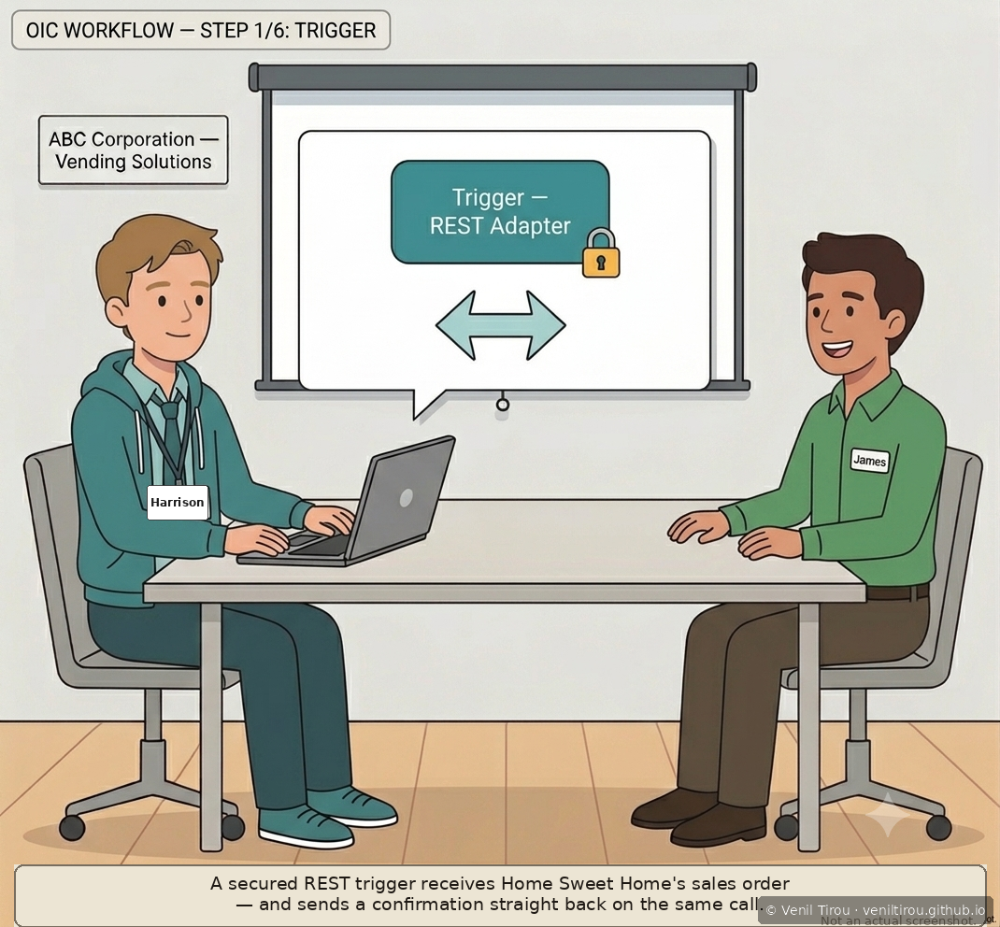
📱 On mobile? Pinch to zoom to read the details clearly.
What this shows: Harrison configures a REST
Adapter as the trigger — a secured, OAuth2-protected endpoint
that Home, Sweet Home's order system can call whenever a new
sales order is placed. Crucially, it isn't one-way: the same
call returns a synchronous confirmation, so their system knows
immediately whether the order actually went through.
Scene 5 — OIC Workflow, Step 2: Connecting to Order Management
Telling OIC Where the Sales Order Is Going Next
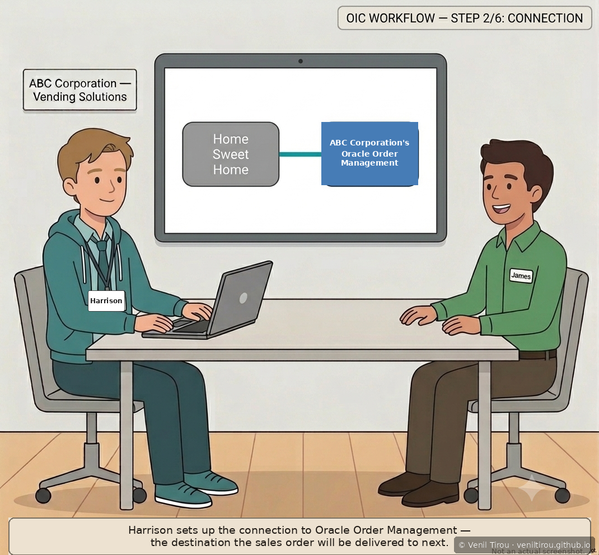
📱 On mobile? Pinch to zoom to read the details clearly.
What this shows: Harrison sets up the outbound
connection to Oracle Order Management using the Oracle ERP
Cloud Adapter — the correctly documented entry point for an
external order, not Subscription Management directly. Once a
sales order lands there correctly, ABC's existing Oracle setup
already knows what to do with it downstream.
Scene 6 — OIC Workflow, Step 3: Mapping the Sales Order Header
Translating Fields — and a Live Customer Lookup
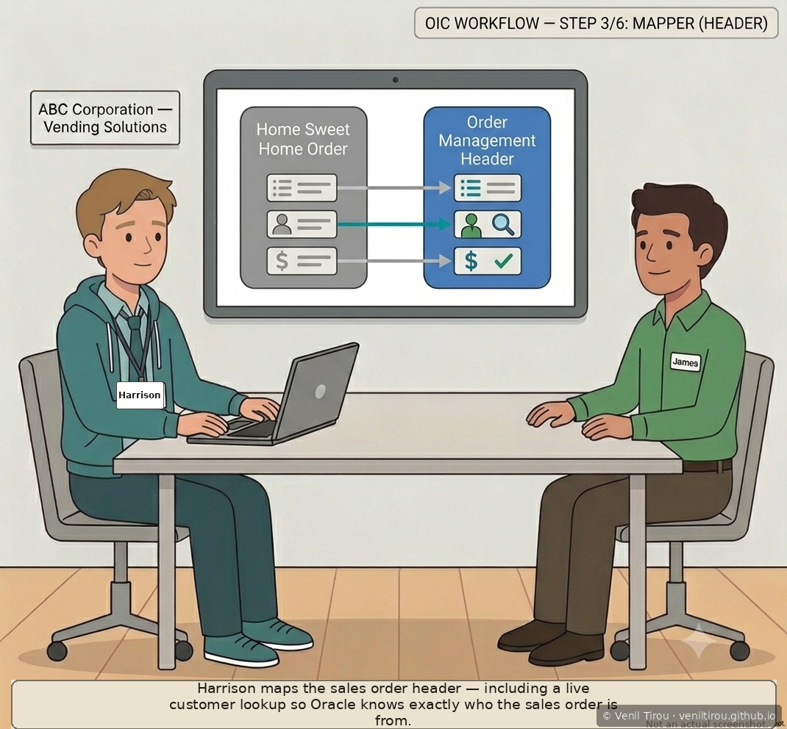
📱 On mobile? Pinch to zoom to read the details clearly.
What this shows: The real work of the
integration: mapping Home, Sweet Home's order fields into the
structure Oracle Order Management expects, including a live
lookup that resolves their property ID into ABC's actual
customer record. Order Management won't auto-create a missing
customer, so this lookup has to succeed before anything else
can happen.
Scene 7 — OIC Workflow, Step 4: Mapping the Sales Order Lines
A Real Mistake, Caught and Corrected
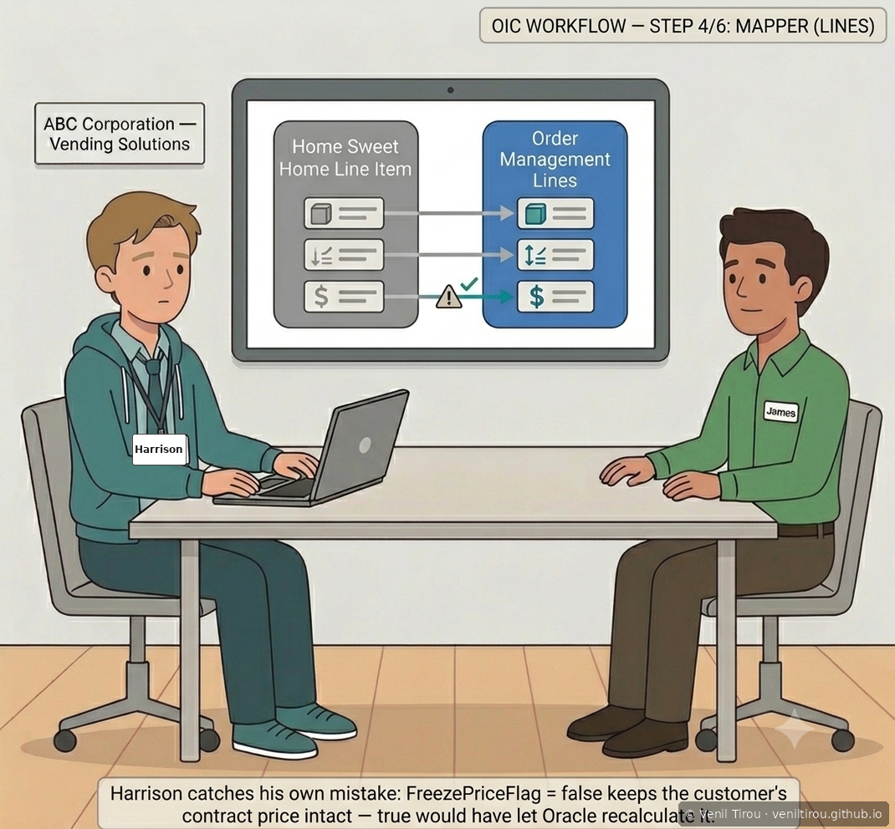
📱 On mobile? Pinch to zoom to read the details clearly.
What this shows: Harrison maps the order line
items — and catches a mistake on his own first pass.
FreezePriceFlag = true doesn't mean "keep my price frozen," it
means the opposite: "go ahead and recalculate a price." Setting
it to false is what actually protects the price James already
negotiated with Home, Sweet Home from being silently
overwritten.
Scene 8 — OIC Workflow, Step 5: Adding a Logger
The Difference Between Monitoring and Actually Troubleshooting
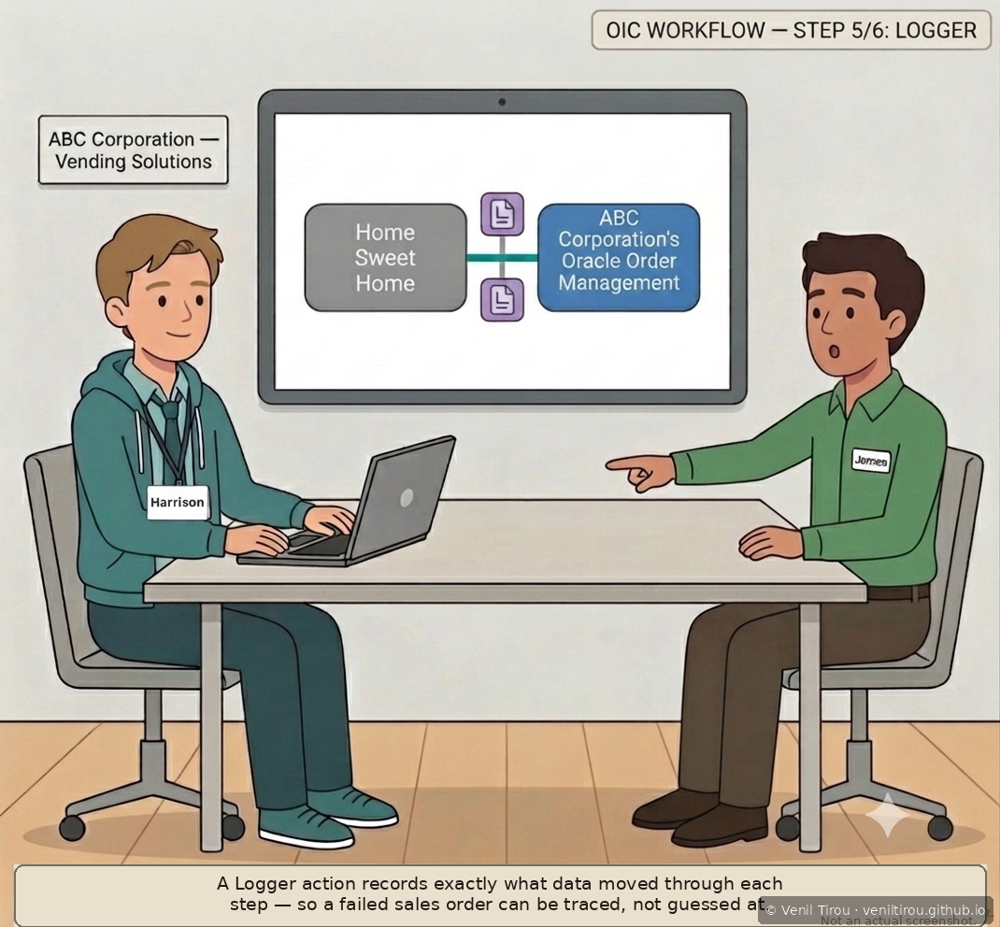
📱 On mobile? Pinch to zoom to read the details clearly.
What this shows: OIC already tracks every
integration run automatically — but that only confirms an
order passed through, not what data it actually carried.
Harrison adds explicit Logger actions at key checkpoints, so
that if a sales order ever goes missing, there's an exact
record of what was received and what was sent, not a guess.
Scene 9 — OIC Workflow, Step 6: Testing the Full Flow End to End
A Failed Test, a Clean Test, and an Automatic Hand-Off
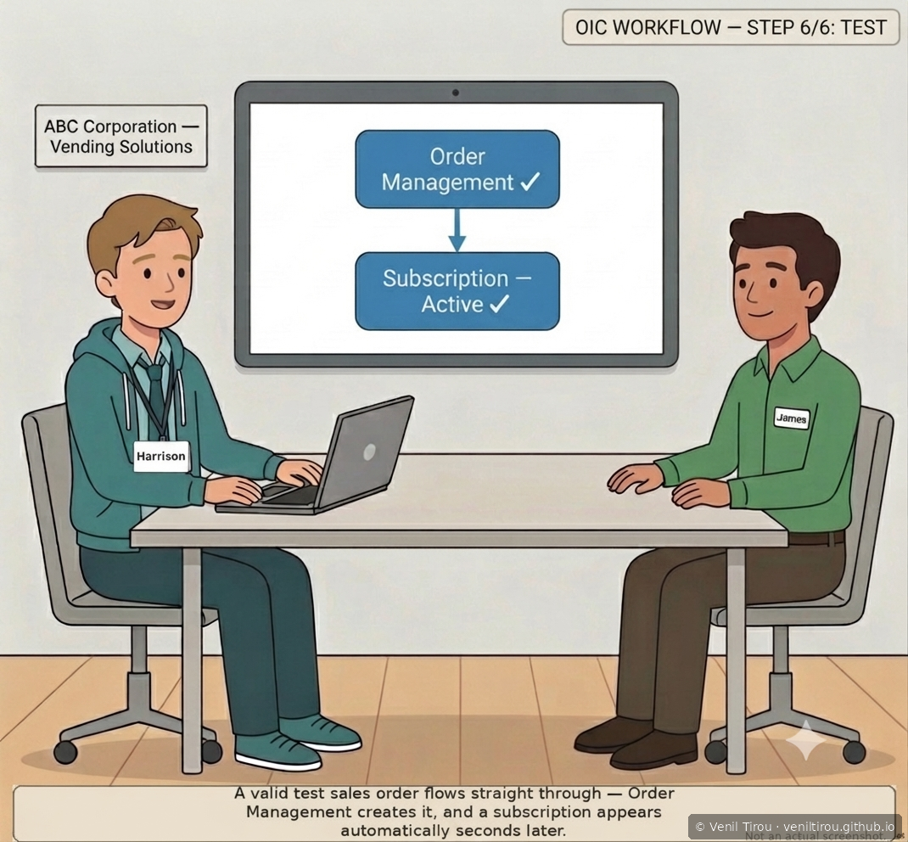
📱 On mobile? Pinch to zoom to read the details clearly.
What this shows: Harrison runs a bad test first
— a property ID that doesn't exist — and OIC flags it loudly
instead of failing silently. Then a valid test sales order
flows straight through: Order Management creates it, and
because ABC's Oracle environment already connects Order
Management to Subscription Management, AR, and Revenue
Management, a subscription appears automatically, seconds
later, with nothing further built.
Scene 10 — Demo Day: Leila Confirms the Handshake
Two Different SaaS Platforms, One Smooth Handshake
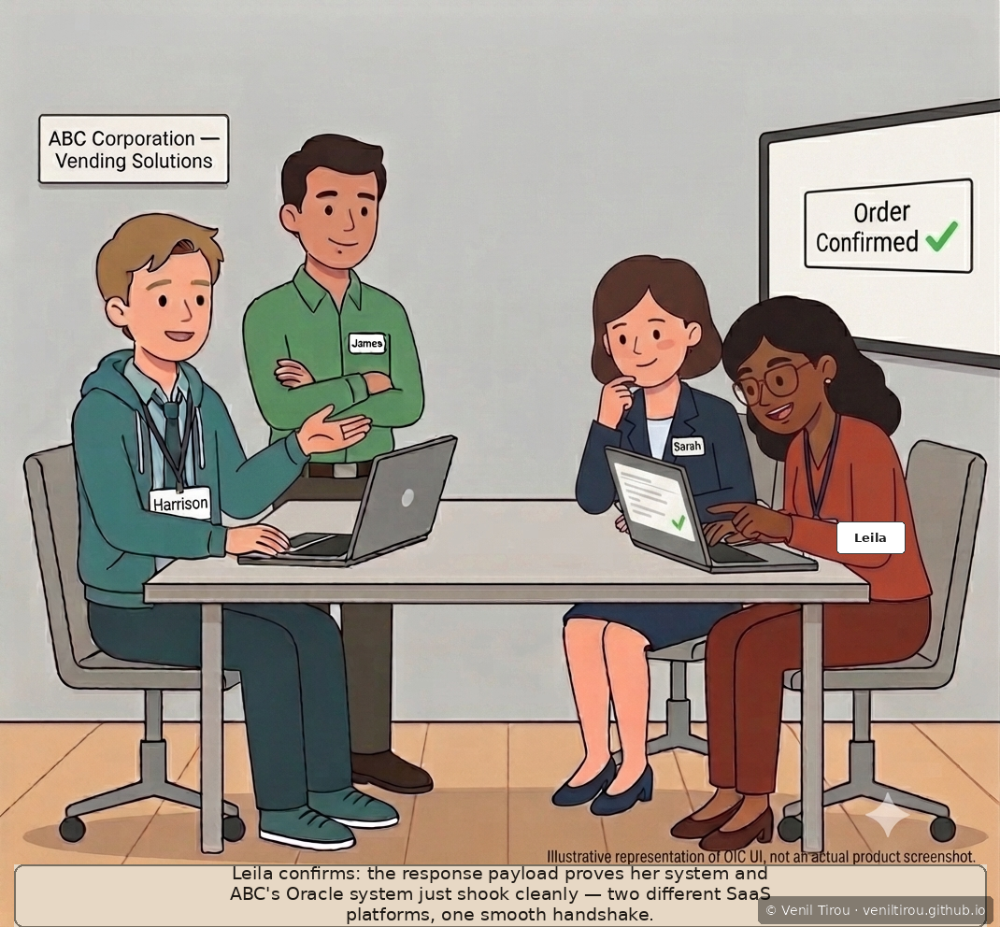
📱 On mobile? Pinch to zoom to read the details clearly.
What this shows: Harrison runs a live demo for
Leila, James, and Sarah — pushing a sample sales order and
showing the confirmation response land back instantly. Leila
also probes the design directly: what happens if an order gets
cancelled minutes later (handled by a unique source ID, not a
blind duplicate), and how billing actually reaches her team
(native Oracle AR, already configured, nothing extra to build).
She confirms the response payload proves the handshake between
two completely different platforms actually works.
Scene 11 — The Win
The Technical Depth That Closed the Deal
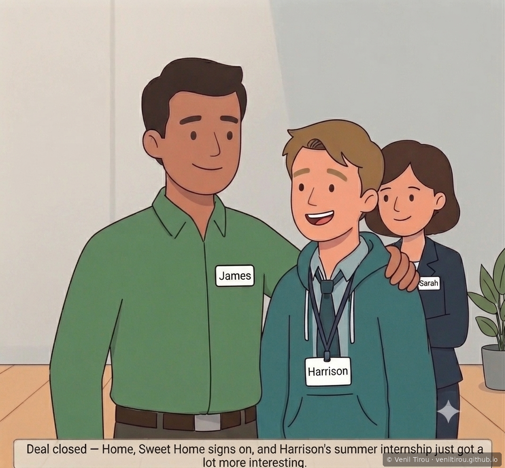
📱 On mobile? Pinch to zoom to read the details clearly.
What this shows: Home, Sweet Home signs on.
James credits the win to the one question Harrison had already
built an answer for — the duplicate-order handling that almost
didn't make the original scope. The technical depth of an
integration isn't invisible to the business outcome; it's
often what actually wins the deal.
Scene 12 — Technical Recap: The OIC Flow
The Full Mechanism, in One Diagram
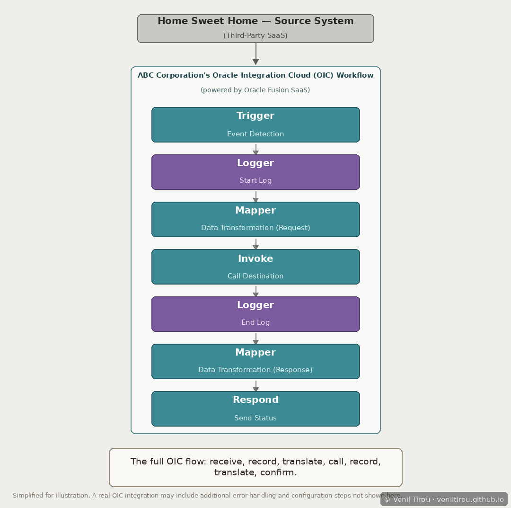
📱 On mobile? Pinch to zoom to read the details clearly.
What this shows: A clean, non-narrative closer
summarizing the whole chapter's mechanism: receive, record,
translate, call, record, translate, confirm. Mapping happens
twice, not once — once to shape the outbound request into
Oracle's schema, and again to shape Order Management's raw
response into whatever Home, Sweet Home's system actually
receives. Everything past Invoke on the Oracle side — Order
Management's fulfillment and the native hand-off to
Subscription Management, AR, and Revenue Management — is
Oracle's own internal processing, outside this integration's
scope and outside this diagram.